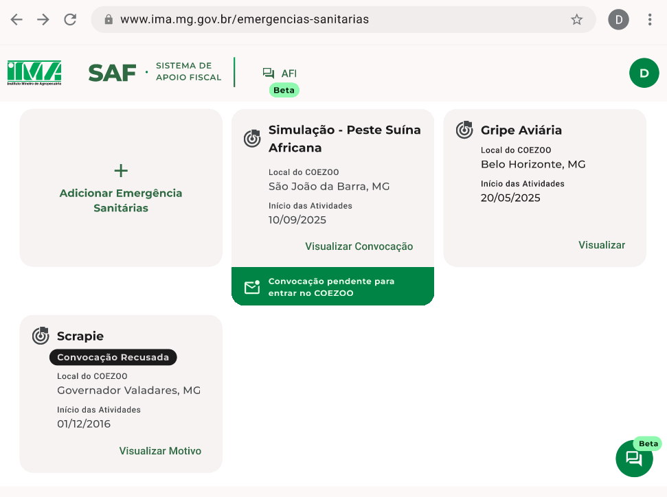
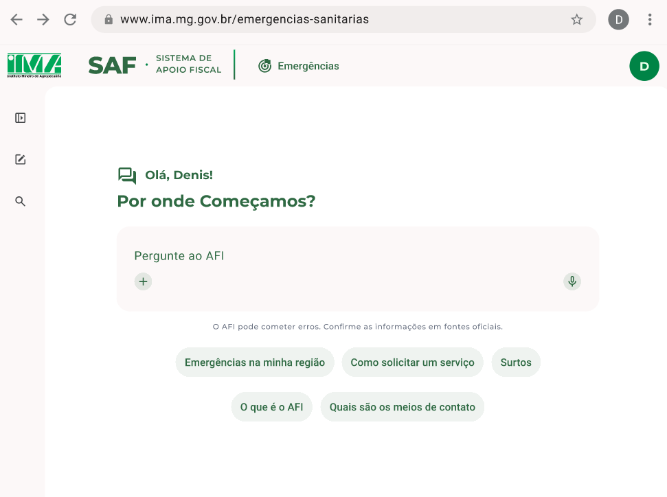
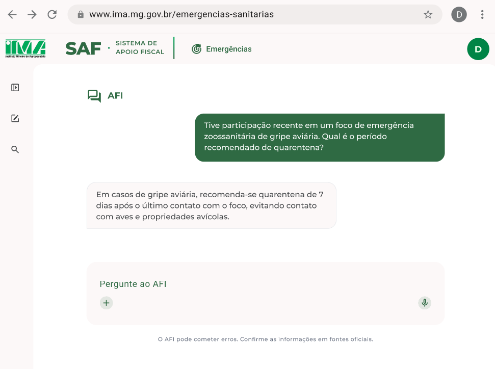

AgroDigital
Projeto do conjunto de sistemas governamentais estaduais ligados ao agronegócio.
Pesquisa, design e engenharia em sistemas do agronegócio.
Product Discovery · UX Research · Liderança UX/UI
Minha atuação na FUNDECC reúne projetos governamentais estaduais ligados ao agronegócio e avaliações especializadas em sistemas institucionais. O trabalho parte de necessidades e regras de negócio, atravessa a prototipação e segue até a validação e o acompanhamento da implementação.
Projeto do conjunto de sistemas governamentais estaduais ligados ao agronegócio.
Apoio a atividades fiscais e ao controle de processos de emergência zoossanitária.
Assistente apresentado na área de emergências sanitárias do SAF.



Product Discovery, levantamento e refinamento de requisitos, UX Research, fluxos, prototipação de alta fidelidade, Design Systems, avaliações heurísticas, acessibilidade, validação com stakeholders, acompanhamento da implementação e liderança de UX/UI.
Também atuei em avaliação heurística e estrutural de sistemas institucionais e de projetos sobre reconhecimento e monitoramento de bovinos em cochos, incluindo a análise da relação entre comportamento alimentar e produção leiteira.
Fluxo de prototipação rápida associado a aproximadamente 2x mais telas produzidas por sprint.